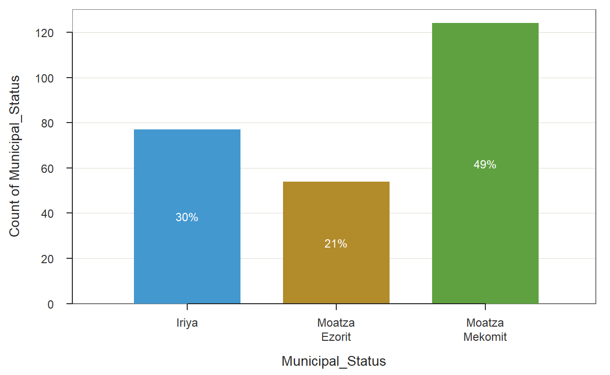
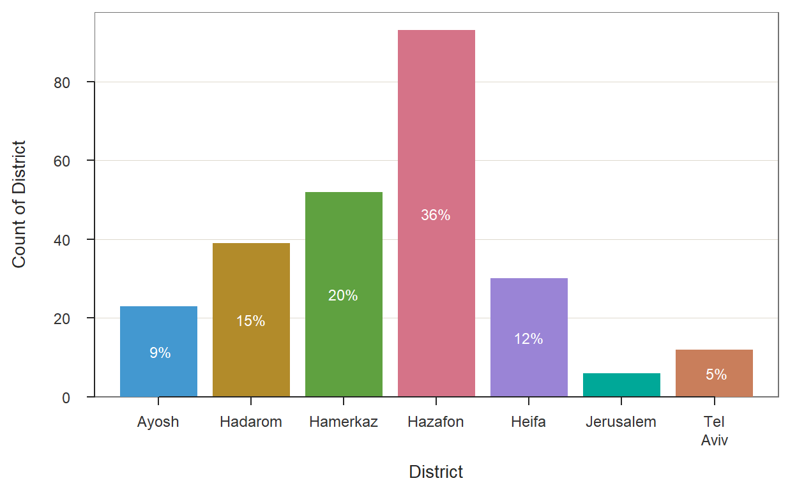
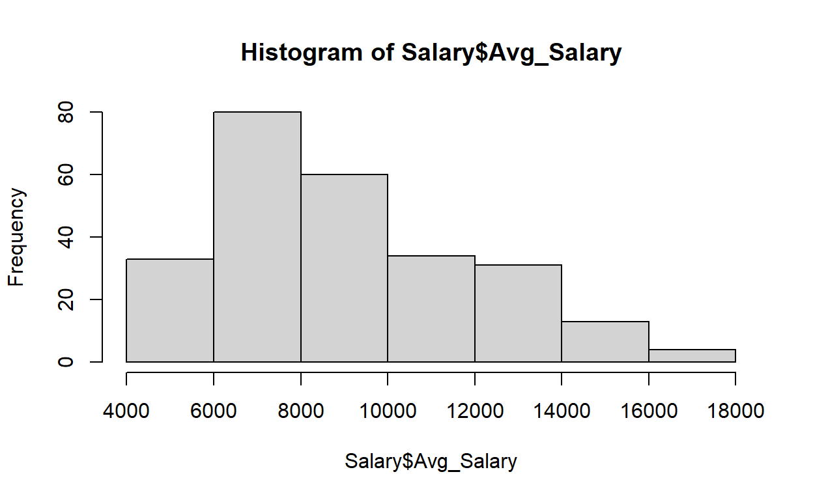
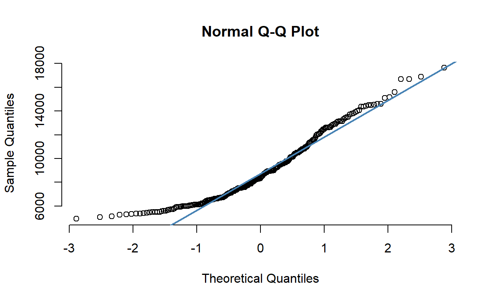
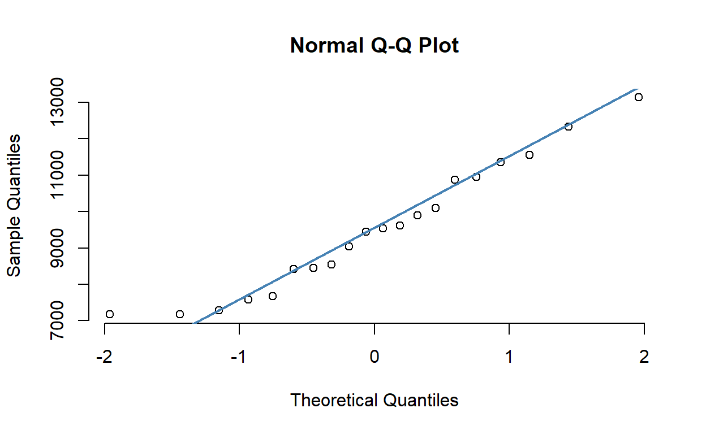
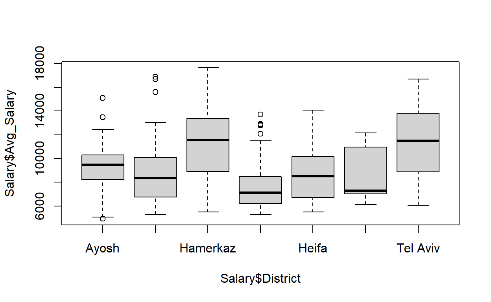
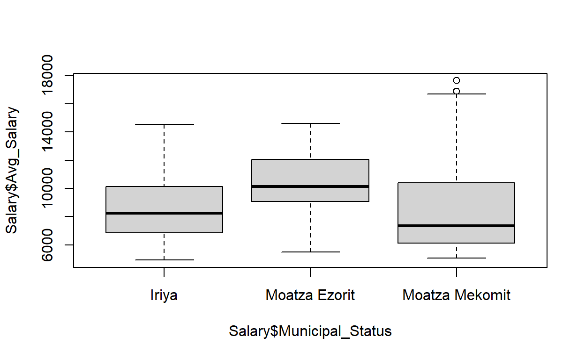

As part of experimental design course in academics, i looked up for the parameters influancing housing prices. i used block model for this. Score: 100
\(y_{ij} = \mu + \alpha_{j}+\beta_{i} + \varepsilon_{ij}\)
\(j\) = District
\(i\) = Municipal status
\(\varepsilon_{ijk}\) ~ \(Norm(0, Var^{2})\)
Independence of observations
Assumption of Equal Variance
\(H_{0}\): \(\alpha_{1}\)=\(\alpha_{2}\)=\(\alpha_{3}\)=\(\alpha_{4}\)
\(H_{1}\): Else
\(H_{1}\): \(\beta_{1}\)=\(\beta_{2}\)=\(\beta_{3}\)=\(\beta_{4}\)
\(H_{1}\): Else
image: “Picture2.png”
image: “Picture3.png”
image: “Picture4.png”
# A tibble: 255 × 4
Authority_Name District Municipal_Status Avg_Salary
<chr> <chr> <chr> <dbl>
1 אום אל-פחם Heifa Iriya 5651.
2 אופקים Hadarom Iriya 7123.
3 אור יהודה Tel Aviv Iriya 8305.
4 אור עקיבא Heifa Iriya 7863.
5 אילת Hadarom Iriya 8236.
6 אלעד Hamerkaz Iriya 6567.
7 אריאל Ayosh Iriya 9010.
8 אשדוד Hadarom Iriya 8564.
9 אשקלון Hadarom Iriya 8239.
10 באקה אל-גרביה Heifa Iriya 6708.
# … with 245 more rows [1] 5651 7123 8305 7863 8236 6567 9010 8564 8239 6708
[11] 8932 7534 7029 5128 6037 7562 13114 13133 9212 14005
[21] 12334 8987 9425 10136 6688 6220 6763 8296 5888 10120
[31] 11540 11485 7529 11095 12609 6107 8959 7443 7504 4915
[41] 14491 9631 8276 9650 13502 6610 7517 10121 6862 8831
[51] 6483 7378 7846 6318 7690 10560 6214 6547 14532 8943
[61] 9450 7307 7865 9960 6649 7709 10807 10492 5389 10810
[71] 7563 11360 14451 12898 7791 6702 11606 7055 6689 14368
[81] 13480 9580 6695 8975 12452 11940 6474 10485 11569 5904
[91] 5690 6143 7561 11185 7199 10432 8041 14088 5979 6230
[101] 5316 8821 5972 11791 8043 5484 11437 14354 5492 8482
[111] 7727 7730 6717 6899 6458 15097 13899 6818 6154 6112
[121] 8112 7341 8703 5939 6088 7605 6531 10384 6125 8342
[131] 6977 6421 7114 14589 6067 7478 6343 6606 13701 7072
[141] 8429 5590 5269 7239 16694 12929 16897 5797 12166 6618
[151] 5907 8208 5341 13812 6515 8977 15582 5361 9191 7352
[161] 5907 7254 5727 5995 7526 17642 7236 16675 7859 5576
[171] 5444 5987 5057 8002 6631 5970 6101 8075 7518 10702
[181] 12642 9535 13135 7073 6482 12608 6107 8217 9241 7563
[191] 9775 6111 5540 12831 6564 5412 15180 8925 5721 14517
[201] 5278 5489 6023 12004 9270 11325 6777 12473 13320 14600
[211] 8943 9592 12607 13774 13412 8660 9064 10599 8537 9454
[221] 10166 8893 10496 12040 10780 12279 13157 13052 12657 10294
[231] 9575 10821 9775 10706 9333 10954 10953 9818 8295 9876
[241] 12088 5484 9677 8744 8798 12569 12789 9748 8955 10404
[251] 9483 10099 11002 9268 8280 Group.1 Group.2 x
1 Ayosh Iriya 7171.182
2 Hadarom Iriya 7666.293
3 Hamerkaz Iriya 10099.299
4 Hazafon Iriya 7574.222
5 Heifa Iriya 8543.616
6 Jerusalem Iriya 7279.071
7 Tel Aviv Iriya 10874.570
8 Ayosh Moatza Ezorit 9534.603
9 Hadarom Moatza Ezorit 9619.408
10 Hamerkaz Moatza Ezorit 12338.106
11 Hazafon Moatza Ezorit 9446.564
12 Heifa Moatza Ezorit 11350.633
13 Jerusalem Moatza Ezorit 10954.036
14 Ayosh Moatza Mekomit 9898.957
15 Hadarom Moatza Mekomit 9035.170
16 Hamerkaz Moatza Mekomit 11558.306
17 Hazafon Moatza Mekomit 7182.528
18 Heifa Moatza Mekomit 8423.199
19 Jerusalem Moatza Mekomit 8442.412
20 Tel Aviv Moatza Mekomit 13137.014| Variable | N | Mean | Std. Dev. | Min | Pctl. 25 | Pctl. 75 | Max |
|---|---|---|---|---|---|---|---|
| District: Ayosh | |||||||
| Municipal_Status | 23 | ||||||
| … Iriya | 4 | 17% | |||||
| … Moatza Ezorit | 6 | 26% | |||||
| … Moatza Mekomit | 13 | 57% | |||||
| Avg_Salary | 23 | 9329.5 | 2557.4 | 4914.9 | 8191 | 10291.9 | 15096.7 |
| District: Hadarom | |||||||
| Municipal_Status | 39 | ||||||
| … Iriya | 12 | 31% | |||||
| … Moatza Ezorit | 16 | 41% | |||||
| … Moatza Mekomit | 11 | 28% | |||||
| Avg_Salary | 39 | 8853.7 | 2972.4 | 5278.4 | 6755.9 | 10084.9 | 16896.9 |
| District: Hamerkaz | |||||||
| Municipal_Status | 52 | ||||||
| … Iriya | 21 | 40% | |||||
| … Moatza Ezorit | 12 | 23% | |||||
| … Moatza Mekomit | 19 | 37% | |||||
| Avg_Salary | 52 | 11149 | 2919.9 | 5483.7 | 8938.7 | 13343.4 | 17641.9 |
| District: Hazafon | |||||||
| Municipal_Status | 93 | ||||||
| … Iriya | 17 | 18% | |||||
| … Moatza Ezorit | 15 | 16% | |||||
| … Moatza Mekomit | 61 | 66% | |||||
| Avg_Salary | 93 | 7619.3 | 1895.1 | 5268.6 | 6214.4 | 8482.2 | 13700.6 |
| District: Heifa | |||||||
| Municipal_Status | 30 | ||||||
| … Iriya | 11 | 37% | |||||
| … Moatza Ezorit | 4 | 13% | |||||
| … Moatza Mekomit | 15 | 50% | |||||
| Avg_Salary | 30 | 8857.7 | 2475.9 | 5491.9 | 6840.5 | 10158.3 | 14088 |
| District: Jerusalem | |||||||
| Municipal_Status | 6 | ||||||
| … Iriya | 2 | 33% | |||||
| … Moatza Ezorit | 1 | 17% | |||||
| … Moatza Mekomit | 3 | 50% | |||||
| Avg_Salary | 6 | 8473.2 | 2464.8 | 6106.9 | 7035.2 | 10097.9 | 12165.6 |
| District: Tel Aviv | |||||||
| Municipal_Status | 12 | ||||||
| … Iriya | 10 | 83% | |||||
| … Moatza Ezorit | 0 | 0% | |||||
| … Moatza Mekomit | 2 | 17% | |||||
| Avg_Salary | 12 | 11251.6 | 3177.9 | 6036.7 | 9145.3 | 13462.8 | 16694.2 |
Authority_Name District Municipal_Status
Length:255 Length:255 Length:255
Class :character Class :character Class :character
Mode :character Mode :character Mode :character
Avg_Salary
Min. : 4915
1st Qu.: 6640
Median : 8342
Mean : 9019
3rd Qu.:10808
Max. :17642 
>>> Suggestions
BarChart(Municipal_Status, horiz=TRUE) # horizontal bar chart
BarChart(Municipal_Status, fill="reds") # red bars of varying lightness
PieChart(Municipal_Status) # doughnut (ring) chart
Plot(Municipal_Status) # bubble plot
Plot(Municipal_Status, stat="count") # lollipop plot
--- Municipal_Status ---
Missing Values: 0
Iriya Moatza Ezorit Moatza Mekomit Total
Frequencies: 77 54 124 255
Proportions: 0.302 0.212 0.486 1.000
Chi-squared test of null hypothesis of equal probabilities
Chisq = 29.953, df = 2, p-value = 0.000 
>>> Suggestions
BarChart(District, horiz=TRUE) # horizontal bar chart
BarChart(District, fill="reds") # red bars of varying lightness
PieChart(District) # doughnut (ring) chart
Plot(District) # bubble plot
Plot(District, stat="count") # lollipop plot
--- District ---
Missing Values: 0
District Count Prop
-----------------------
Ayosh 23 0.090
Hadarom 39 0.153
Hamerkaz 52 0.204
Hazafon 93 0.365
Heifa 30 0.118
Jerusalem 6 0.024
Tel Aviv 12 0.047
-----------------------
Total 255 1.000
Chi-squared test of null hypothesis of equal probabilities
Chisq = 142.573, df = 6, p-value = 0.000 
Asymptotic one-sample Kolmogorov-Smirnov test
data: Salary$Avg_Salary
D = 1, p-value < 0.00000000000000022
alternative hypothesis: two-sided
Exact one-sample Kolmogorov-Smirnov test
data: Agg_Salary_data$Avarage_Salary
D = 1, p-value < 0.00000000000000022
alternative hypothesis: two-sided
Pearson's Chi-squared test
data: Agg_Salary_data$District and Agg_Salary_data$Municipal_Status
X-squared = 0.95238, df = 12, p-value = 1
Bartlett test of homogeneity of variances
data: Agg_Salary_data$Avarage_Salary by Agg_Salary_data$District
Bartlett's K-squared = 0.96219, df = 6, p-value = 0.987
Bartlett test of homogeneity of variances
data: Agg_Salary_data$Avarage_Salary by Agg_Salary_data$Municipal_Status
Bartlett's K-squared = 1.5442, df = 2, p-value = 0.462 Df Sum Sq Mean Sq F value Pr(>F)
District 6 32679494 5446582 9.362 0.000863 ***
Municipal_Status 2 20610973 10305487 17.714 0.000363 ***
Residuals 11 6399612 581783
---
Signif. codes: 0 '***' 0.001 '**' 0.01 '*' 0.05 '.' 0.1 ' ' 1Analysis of Variance Table
Response: Avarage_Salary
Df Sum Sq Mean Sq F value Pr(>F)
District 6 32679494 5446582 2.6214 0.06853 .
Residuals 13 27010586 2077737
---
Signif. codes: 0 '***' 0.001 '**' 0.01 '*' 0.05 '.' 0.1 ' ' 1Analysis of Variance Table
Response: Avarage_Salary
Df Sum Sq Mean Sq F value Pr(>F)
Residuals 19 59690080 3141583 $statistics
MSerror Df Mean CV
581783 11 9506.459 8.02346
$parameters
test name.t ntr alpha
Duncan Agg_Salary_data$District 7 0.05
$duncan
NULL
$means
Agg_Salary_data$Avarage_Salary std r Min
Ayosh 8868.247 1480.949 3 7171.182
Hadarom 8773.624 1002.482 3 7666.293
Hamerkaz 11331.904 1136.445 3 10099.299
Hazafon 8067.771 1210.024 3 7182.528
Heifa 9439.149 1656.488 3 8423.199
Jerusalem 8891.840 1878.252 3 7279.071
Tel Aviv 12005.792 1599.790 2 10874.570
Max Q25 Q50 Q75
Ayosh 9898.957 8352.892 9534.603 9716.780
Hadarom 9619.408 8350.731 9035.170 9327.289
Hamerkaz 12338.106 10828.803 11558.306 11948.206
Hazafon 9446.564 7378.375 7574.222 8510.393
Heifa 11350.633 8483.407 8543.616 9947.125
Jerusalem 10954.036 7860.742 8442.412 9698.224
Tel Aviv 13137.014 11440.181 12005.792 12571.403
$comparison
NULL
$groups
Agg_Salary_data$Avarage_Salary groups
Tel Aviv 12005.792 a
Hamerkaz 11331.904 a
Heifa 9439.149 b
Jerusalem 8891.840 b
Ayosh 8868.247 b
Hadarom 8773.624 b
Hazafon 8067.771 b
attr(,"class")
[1] "group"$statistics
MSerror Df Mean CV
581783 11 9506.459 8.02346
$parameters
test name.t ntr alpha
Duncan Agg_Salary_data$Municipal_Status 3 0.05
$duncan
NULL
$means
Agg_Salary_data$Avarage_Salary std r Min
Iriya 8458.322 1471.657 7 7171.182
Moatza Ezorit 10540.558 1192.950 6 9446.564
Moatza Mekomit 9668.227 2053.059 7 7182.528
Max Q25 Q50 Q75
Iriya 10874.57 7426.646 7666.293 9321.458
Moatza Ezorit 12338.11 9555.804 10286.722 11251.484
Moatza Mekomit 13137.01 8432.805 9035.170 10728.631
$comparison
NULL
$groups
Agg_Salary_data$Avarage_Salary groups
Moatza Ezorit 10540.558 a
Moatza Mekomit 9668.227 a
Iriya 8458.322 b
attr(,"class")
[1] "group"$statistics
MSerror Df Mean CV
581783 11 9506.459 8.02346
$parameters
test p.ajusted name.t ntr alpha
Fisher-LSD none Agg_Salary_data$District 7 0.05
$means
Agg_Salary_data$Avarage_Salary std r LCL
Ayosh 8868.247 1480.949 3 7898.995
Hadarom 8773.624 1002.482 3 7804.371
Hamerkaz 11331.904 1136.445 3 10362.651
Hazafon 8067.771 1210.024 3 7098.518
Heifa 9439.149 1656.488 3 8469.897
Jerusalem 8891.840 1878.252 3 7922.587
Tel Aviv 12005.792 1599.790 2 10818.705
UCL Min Max Q25 Q50 Q75
Ayosh 9837.500 7171.182 9898.957 8352.892 9534.603 9716.780
Hadarom 9742.876 7666.293 9619.408 8350.731 9035.170 9327.289
Hamerkaz 12301.156 10099.299 12338.106 10828.803 11558.306 11948.206
Hazafon 9037.024 7182.528 9446.564 7378.375 7574.222 8510.393
Heifa 10408.402 8423.199 11350.633 8483.407 8543.616 9947.125
Jerusalem 9861.092 7279.071 10954.036 7860.742 8442.412 9698.224
Tel Aviv 13192.879 10874.570 13137.014 11440.181 12005.792 12571.403
$comparison
NULL
$groups
Agg_Salary_data$Avarage_Salary groups
Tel Aviv 12005.792 a
Hamerkaz 11331.904 a
Heifa 9439.149 b
Jerusalem 8891.840 bc
Ayosh 8868.247 bc
Hadarom 8773.624 bc
Hazafon 8067.771 c
attr(,"class")
[1] "group"$statistics
MSerror Df Mean CV
581783 11 9506.459 8.02346
$parameters
test p.ajusted name.t ntr alpha
Fisher-LSD none Agg_Salary_data$Municipal_Status 3 0.05
$means
Agg_Salary_data$Avarage_Salary std r LCL
Iriya 8458.322 1471.657 7 7823.797
Moatza Ezorit 10540.558 1192.950 6 9855.193
Moatza Mekomit 9668.227 2053.059 7 9033.702
UCL Min Max Q25 Q50
Iriya 9092.847 7171.182 10874.57 7426.646 7666.293
Moatza Ezorit 11225.923 9446.564 12338.11 9555.804 10286.722
Moatza Mekomit 10302.751 7182.528 13137.01 8432.805 9035.170
Q75
Iriya 9321.458
Moatza Ezorit 11251.484
Moatza Mekomit 10728.631
$comparison
NULL
$groups
Agg_Salary_data$Avarage_Salary groups
Moatza Ezorit 10540.558 a
Moatza Mekomit 9668.227 a
Iriya 8458.322 b
attr(,"class")
[1] "group"xfun::embed_file(here::here(“Experimental_Design”, “_Design_files_data.xlsx”), text = Download data source here”)
Distill is a publication format for scientific and technical writing, native to the web.
Learn more about using Distill for R Markdown at https://rstudio.github.io/distill.